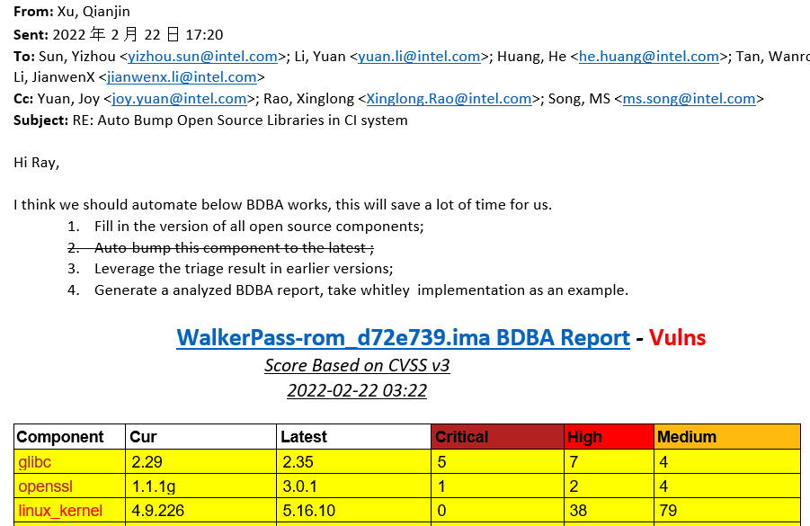
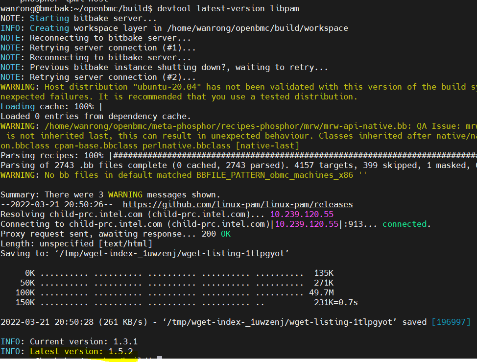
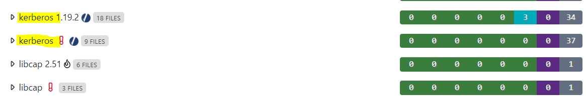
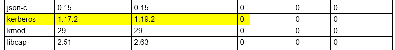
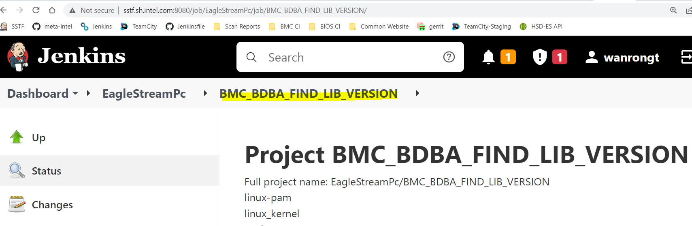

BDBA Scan Report : Auto-override lib version¶
Task Requirement:¶
Here are the details about requirement requested by Xu,Qianjin:
Fill in the version of all open source components;
Leverage the triage result in earlier versions;
Generate a analyzed BDBA report, take Whitley implementation as an example.

Task breakdown¶
1.Determine current versions of all the open source libraries for EaglestreamPc
(1) Lib with bb files in “dsg-openbmc-openbmc” code repo
Extract lib version from bb files name, take “expat” as a example

(2) Lib without bb files in code repo
use devtool to obtain version
cd ~/openbmc/
rm -rf build/
export TEMPLATECONF=/home/wanrong/openbmc/openbmc-meta-intel/meta-egs/conf/
source oe-init-build-env
devtool latest-version {lib_name}
devtool search {lib_name}
Take lib “libpam” as a example: 
Record current lib name without bb files:
| BDBA Library | Latest Version | Current Version | Lib name in code |
|---|---|---|---|
| linux-pam | 1.5.2 | 1.3.1 | libpam |
| linux_kernel | 5.16.11 | 5.10.67 | linux-aspeed |
| mtd | 2.1.3 | 1.1.6 | mtdev |
| python | 3.9.6 | 3.9.6 | python3 |
| kmod | 29 | 29 | kmod |
| tdb | 1.4.6 | 1.4.3 | libtdb |
| liblzo2 | 2.1 | 2.1 | lzo |
| libiniparser | 4.1 | 4.1 | iniparser |
| kerberos | 1.17.2 | 1.17.2 | krb5 |
| safestring | None | 3.4 | safec |
| systemd-shim | None | 249.3 | systemd |
2.Update the open source library to the correct version, consistent with the one on the BDBA server
(1)BDBA API
BDBA API LINK: https://bdba001.icloud.intel.com/help/api/#api-endpoints
(2)Use cur command to get info from BDBA server ,such as open source libraries list
List groups:
curl -k -s https://bdba001.icloud.intel.com/api/groups/
Get analysis results:
curl -k -s https://bdba001.icloud.intel.com/api/product/
Add/modify version overrides
curl -k -s -X POST -T "+VERSION_OVERRIDE_JSON_PATH+" https://bdba001.icloud.intel.com/api/versionoverride/
3.Optimize the format of the BDBA report
Clean the data from BDBA server and match lib name to lib version in use while generating final table  
Script design¶
1.Introduction：
Override BDBA open source library version that bdba website recognizes incorrectly and generated analyzed report every week.
2.Easy to use:
(1) Trigger build job “BMC_BDBA_FIND_LIB_VERSION” in SSTF server

(2) Download script from github repo “Scan_Report_Mail”and Run it with python3 Environment
3.Main process:
(1)Use Jenkins API to get daily build version and BDBA report link
(2) Get analysis results and Extract lib name list from json data
(3) Find all the lib version and Add version overrides
(6) Create analyzed report and Send mail